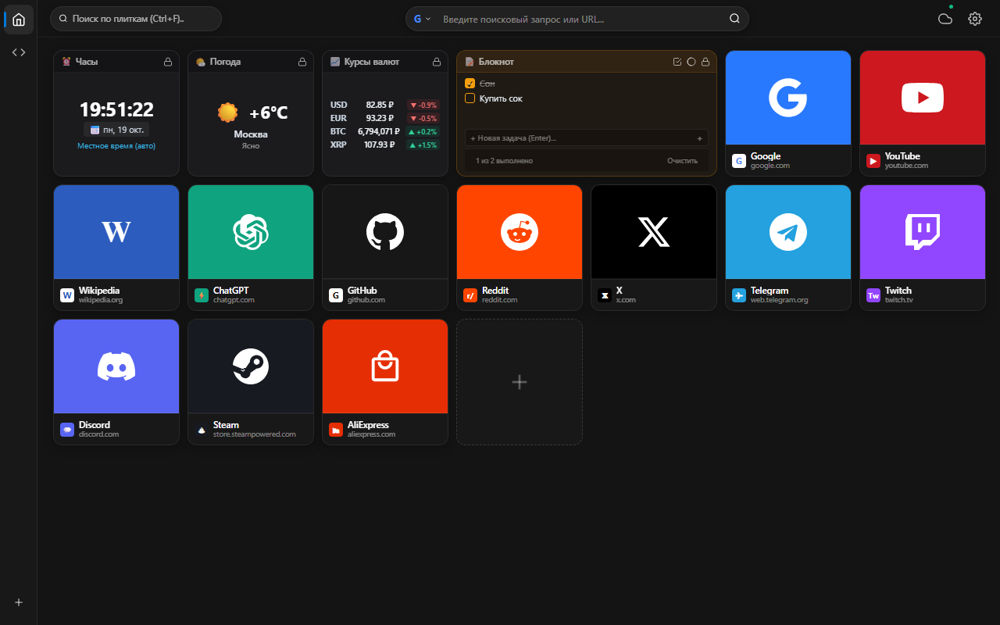

PROJECT 0001
v6.4.1 // ОФИЦИАЛЬНЫЙ РЕЛИЗ
CHROME EXTENSION (MV3)
Tablo Tab — Экспресс-панель Chromium
Эстетичная персональная панель для новой вкладки в знаковых визуальных стилях Windows 11 Fluent Mica и Windows 10 Metro Classic. Неограниченные рабочие пространства, интерактивные смарт-виджеты и приватный бэкап.

ВНЕШНИЙ ВИД И ИНТЕРФЕЙС
Переключайте режимы для просмотра оформления

ИНЖЕНЕРНЫЙ ФОРМУЛЯР ПАРАМЕТРОВ (ТТХ)
ID в Chrome Web Store:
jmnpkejnlfmkckbmnanopjglbbmogeck
Архитектура:
Google Manifest V3 (Service Worker)
Стили интерфейса:
Windows 11 Mica & Win 10 Metro
Смарт-виджеты:
Часы, Погода, Курсы валют, Заметки
Хранилище данных:
100% Локально (chrome.storage.local)
Облачная синхронизация:
Google Диск OAuth2 (Опционально)
Телеметрия и трекеры:
ОТСУТСТВУЮТ (Полная автономность)
Лицензия:
Open Source / Бесплатно